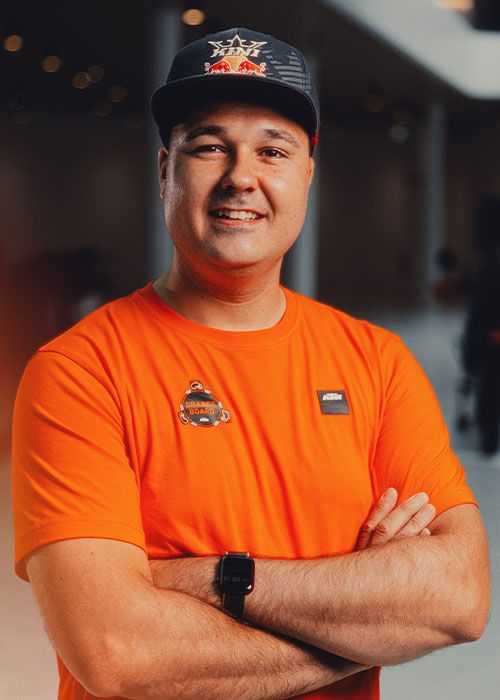

MEET THE ORANGE BOARD MEMBERS
Daniel Kochs
GERMANY

Portrait could not be loaded.
Daniel rides everything from hard enduro to dual-sport adventures across Europe, offering hands-on insight into real-world performance, usability, and KTM bike customization.
KTM MOTORCYCLES RIDDEN / OWNED
2016 KTM 250 EXC SD, 2016 KTM 350 EXC-F SD, 2019 KTM 790 ADVENTURE R (highly customized), 2022 KTM 690 ENDURO R (highly customized Rally built), 2022 KTM 690 SMC-R (customized), 2022 KTM 500 EXC-F (clean Supermoto Build), 2024 KTM 450 EXC-F (highly customized light Rally built)
EXPLORE THE OFFICIAL KTM ORANGE BOARD →
Independent profile page reproducing the member information published by KTM. Visit the official KTM website for the complete Orange Board feature and video.